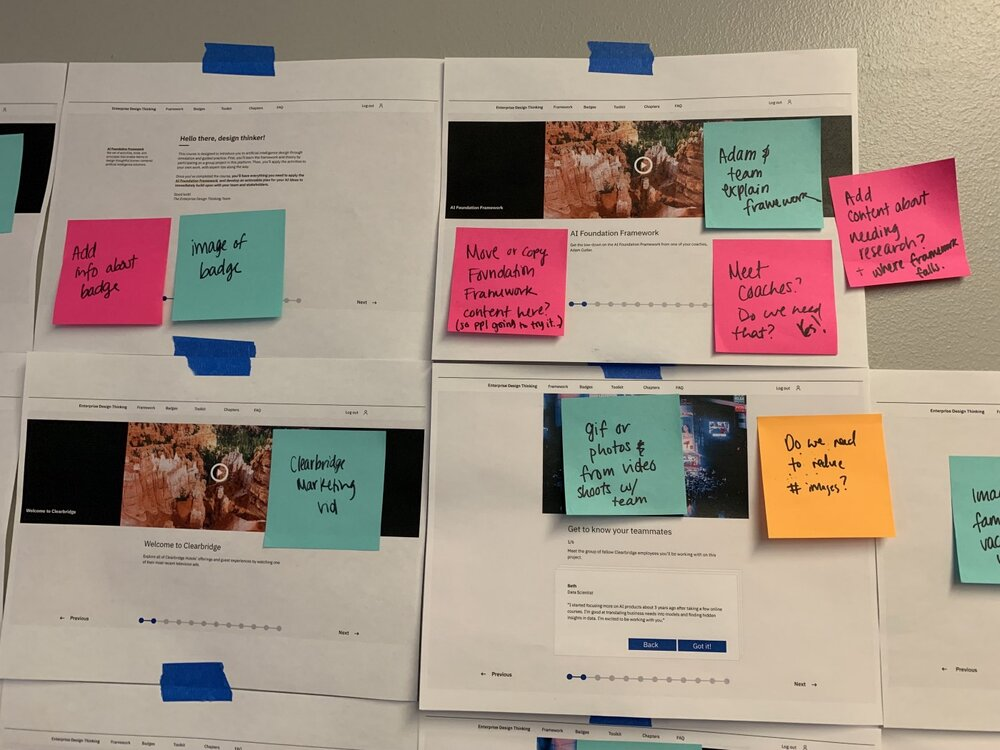

User centered AI education
Role: Education designer
Jan 19 to August 19

IBM has strategically grown its focus on AI, and the company needed to prepare product teams to build cohesive experiences with responsible, human centered design. I and 3 other designers, Ann, Rob, and David, were tasked with building a scalable course to prepare teams to be able to responsibly design these applications, guided by a clear intent and focus on people.
Based on 3 years of team research, our online course provides the framework and tools to recognize responsible AI design, align a team, and work consider potential data sources for AI solutions. We also provide an extended case study to illustrate difficult conversations and to model a diverse, empowered team.
Based on 3 years of team research, our online course provides the framework and tools to recognize responsible AI design, align a team, and work consider potential data sources for AI solutions. We also provide an extended case study to illustrate difficult conversations and to model a diverse, empowered team.
My work for this project included user research, curriculum design, concept creation, and eventually the production of 15 video scripts which made their way through pre and post production with the help of our design team.
Through user research we discovered that the most successful AI applications were created by diverse, empowered teams—a core principle in Enterprise Design Thinking. Unsuccessful teams often had stifled communication between project managers, designers, engineers, and users.
In the words of my team member, Ann, “Throughout the first four weeks, we asked questions, walked through a potential curriculum in a workshop, interviewed participants, came up with ideas, aligned on shared goals, held some Playbacks, threw away some concepts we really liked, prototyped and tested some things...Little by little I went from “I don't know anything about AI” to “I know a couple things about AI.””
In the words of my team member, Ann, “Throughout the first four weeks, we asked questions, walked through a potential curriculum in a workshop, interviewed participants, came up with ideas, aligned on shared goals, held some Playbacks, threw away some concepts we really liked, prototyped and tested some things...Little by little I went from “I don't know anything about AI” to “I know a couple things about AI.””
After researching our users and developing an initial curriculum, I hosted two in-person workshops. This provided the curriculum team with a testing ground and jumpstarted 40 design thinkers towards the path of becoming a coach. From the feedback we received, it was clear participants wanted deeper content and more of it. We then moved to a seven-week, virtual course to dive into deeper content, while also testing if it was possible to scale the number of people who could deliver this course in the future. Through a cohort model, we curated a sense of community—participants advised each other, reviewed applications, and even posted coaching opportunities. We also learned that the size of the cohort dramatically impacted the engagement; 12 worked great, 20 not-so-much.
While we were still in the mode of concept creation, our timeline was shortened due to some good news: IBM was going to host a design summit in a month and a half, and our project was in-line to be debuted to several high-profile clients. We were excited to have a high visibility project, but also knew we'd have to work extremely quickly.Our curriculum design hinged heavily on the idea of having case studies with a team working through real conversations, alongside activities we'd developed based on design thinking principles. Based on this, I wrote 15 video scripts and we drew up an ambitius production timeline.“Good storytelling is how things stick, after all — and this content lent itself well to a learn-by-example model. This course offered a new opportunity for attempting a video style we hadn't before. We wanted it to be authentic and useful and entertaining. We decided to make The Office. Well, not exactly, but we did have some fun watching it for inspiration.” — Ann.While David and I went into video editing mode, the rest of our team dove into creating Toolkit activities, making a workbook, and creating GIFs and images. Then we stepped back to review the videos, edit the course, and input the goods into JSON.
We made the ambitious timeline work and the course was well recieved at the summit, but we weren't satisfied yet. We launched an update just two weeks after the first launch, and monitored the success of the course.
6 months after launch, both individual feedback and metrics indicated that this course was one of our most engaging and memorable on the Enterprise Design Thinking platform yet. In 6 months, 5,200 learners completed the course and each video had an average of 5,000 views. We had unusually high completion rate and retention. In comparison to our Co-creator and Practitioner courses, the AI course had a higher completion rate (46% as opposed to 27% and 38% respectively). The AI course also has a much later drop-off (only 25% of those who dropped the course left in the first lesson. In our other courses, 50% dropped in the first lesson).
4 years after this project, I've got to see the long term benefit of having teams at IBM who were effectively communicating about their intent of using AI in products.

6 months after launch, both individual feedback and metrics indicated that this course was one of our most engaging and memorable on the Enterprise Design Thinking platform yet. In 6 months, 5,200 learners completed the course and each video had an average of 5,000 views. We had unusually high completion rate and retention. In comparison to our Co-creator and Practitioner courses, the AI course had a higher completion rate (46% as opposed to 27% and 38% respectively). The AI course also has a much later drop-off (only 25% of those who dropped the course left in the first lesson. In our other courses, 50% dropped in the first lesson).
4 years after this project, I've got to see the long term benefit of having teams at IBM who were effectively communicating about their intent of using AI in products.